实验5 AM 信号接收解调
一、AM信号调制解调的原理
使用另一余弦信号，对AM信号进行频谱搬移，通过带通滤波器滤除其他信号，然后对信号进行解调，即可收听解调后的AM信号。
二、信号流程图及波形
- 连接“File Source、Throttle、WX GUI FFT Sink”模块
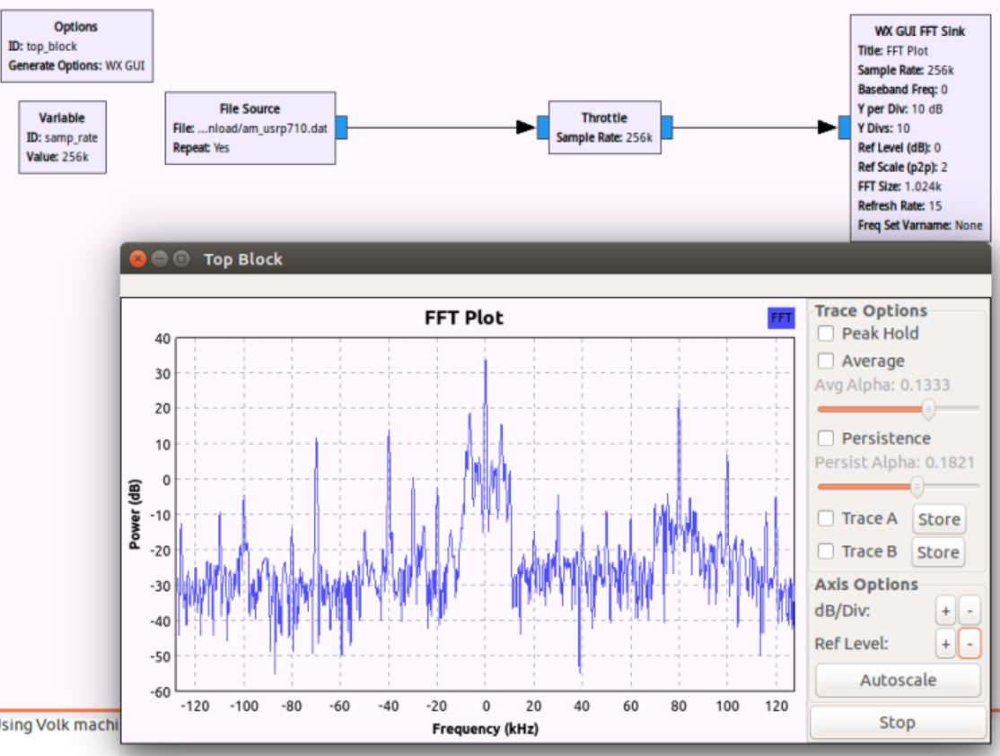
- 使用一个 Variable 模块和“Rational Resampler”模块
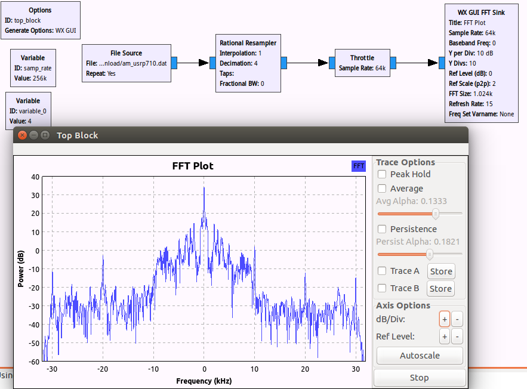
- 增加一个带通滤波器滤除其他的信号

- 使用“Complex to Mag”模块将复数信号转为实数信号
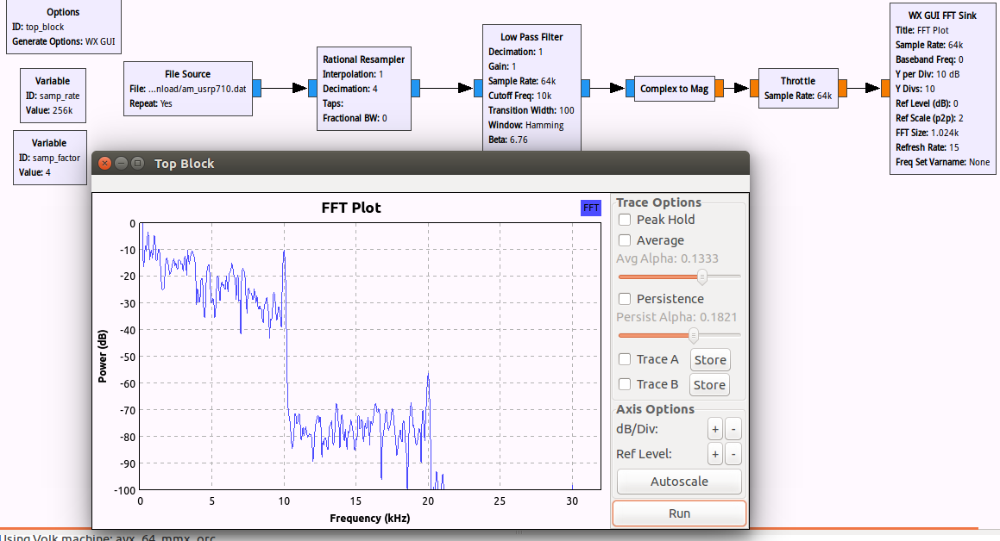
- 加入“audio sink、WX GUI scope sink”

6.加入衰减器模块“Multiply Const”，同时使用“WX GUI Slider”模块调节输入扬声器的信号功率

7.乘以一个余弦信号进行频谱的搬移
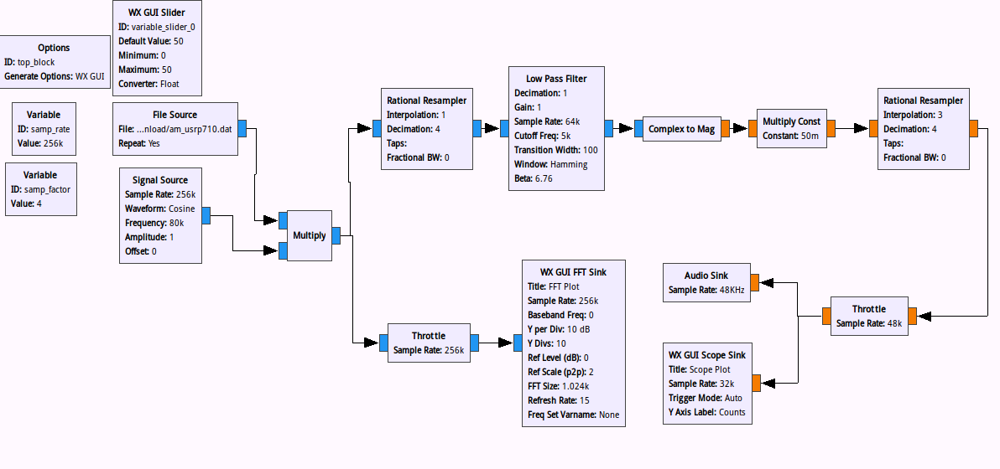

- 增加自动增益控制模块（ACG2）以及调节频率的 slider 模块
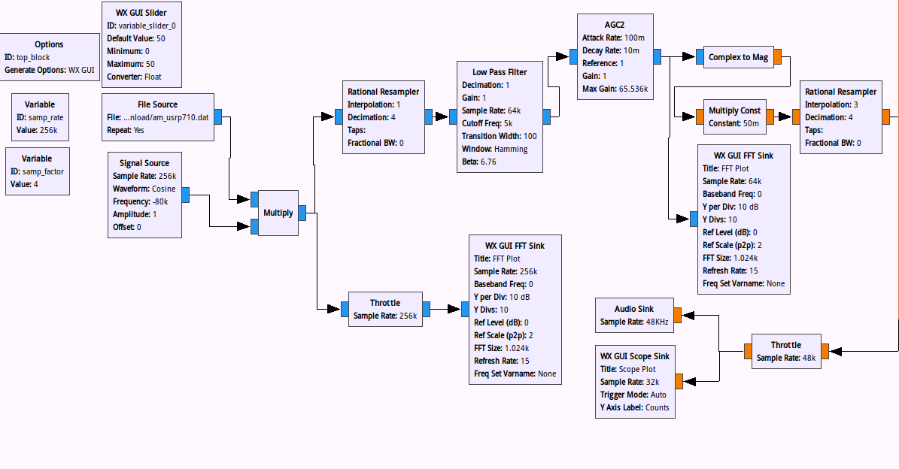
三、AM电台的中心频率频谱图
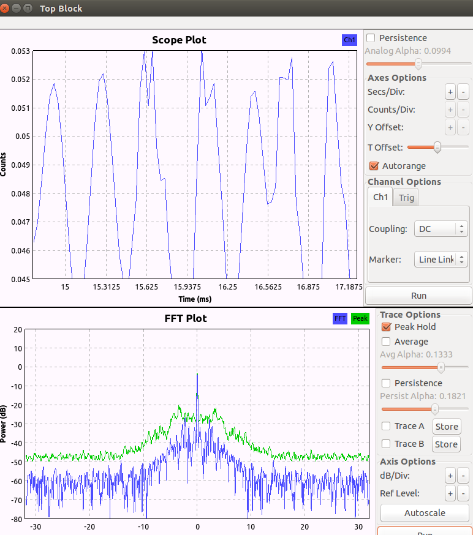
实验6 FM广播接收机及频谱分析
一、USRP设备信息呈现 uhd_find_devices
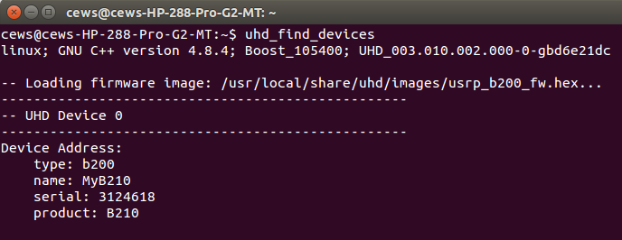
二、谱分析流程图
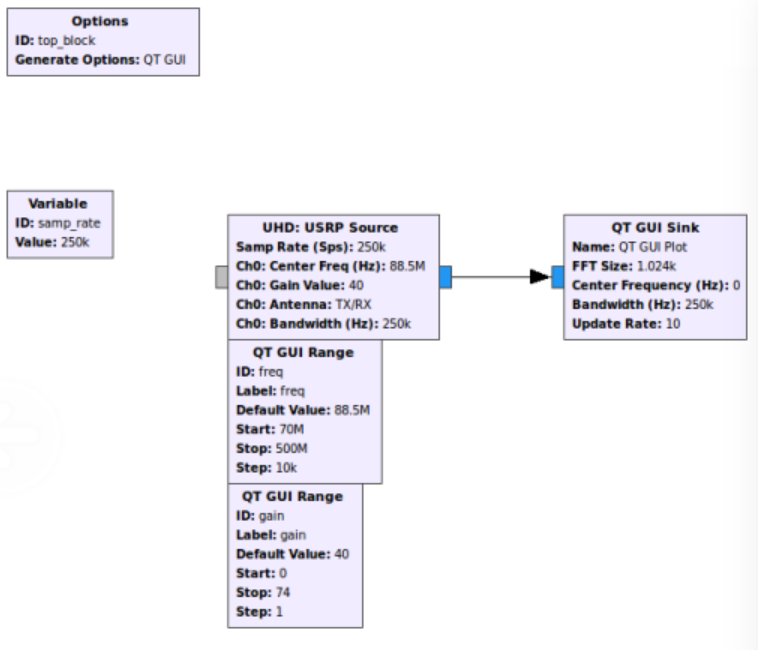
三、FM调制与解调的原理
接收广播信号，用重采样将接收到的信号数据速率与声卡采样速率匹配，最后用宽带调频接收对FM信号进行解调。
四、FM收音机流程图
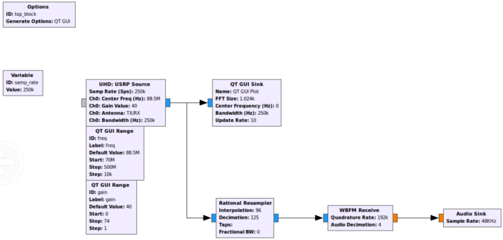
五、收听频道的频谱

实验7 伪基站搭建与 IMSI 捕获
一、伪基站
存在的原因：伪基站工作原理主要是利用了移动通信GSM系统设计上手机和基站之间连接的单向认证机制的缺陷，而2G网络就是基于GMS系统的。 CDMA2000、3G、4G不存在伪基站。
二、OpenBTS编译成功
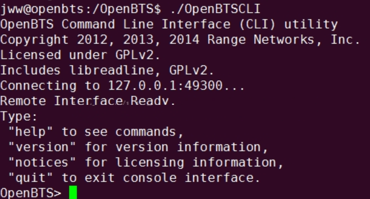
三、连接到本基站的手机IMSI截图

四、短信截图
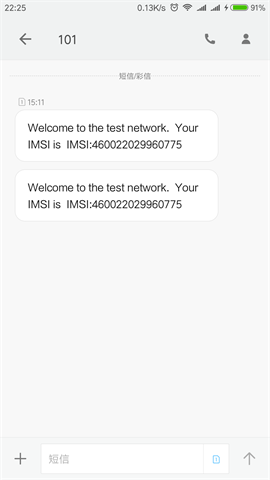
实验8 使用gr-gsm进行GSM数据捕获及分析
一、当前位置基站信息截图

二、实时捕获数据的wireshark截图
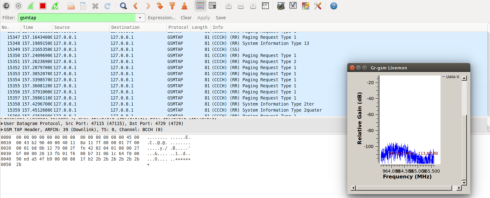
三、下行短信截图
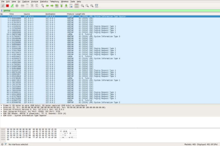
四、为什么可以获得其他用户短信信息？
因为在无线信道中可以监听到其他设备发出的通信信号，经过解码等操作后就能获得其他用户短信消息。
实验9
一、GPS定位原理
设GPS系统中卫星为Pi，P1、P2和P3的位置的位置信息可以通过星历数据计算得到，只要知道了信号的卫星发射时刻和 GPS 接收机收到信号的时刻，就可以计算出卫星到用户的距离，然而当地时间和卫星时间并不是同步的，会出现一个时间偏移量∆t，因此，这个时间偏移量∆t也应考虑进去，即公式为
$$ \sqrt{(x-x_i)^2+(x-y_i)^2+(x-z_i)^2}=C(\Delta t_i+t_i) $$
二、北斗与GPS原理的异同
-
相同点：均可实现全球定位
-
区别:
北斗 GPS 三频信号 双频信号 有源定位+无源定位 无源定位 有短报文通信服务 无通信服务 可获得其他人的位置信息 只能获得自身位置信息 境内监控 非美国本土也有 地面监控 部分
三、给出一个特定地点的经纬度信息，在百度地图中呈现并截图
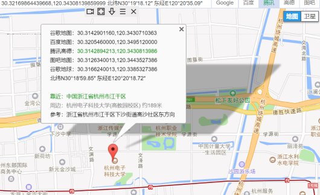
四、定位到该特定地点并截图

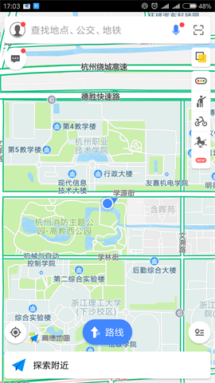